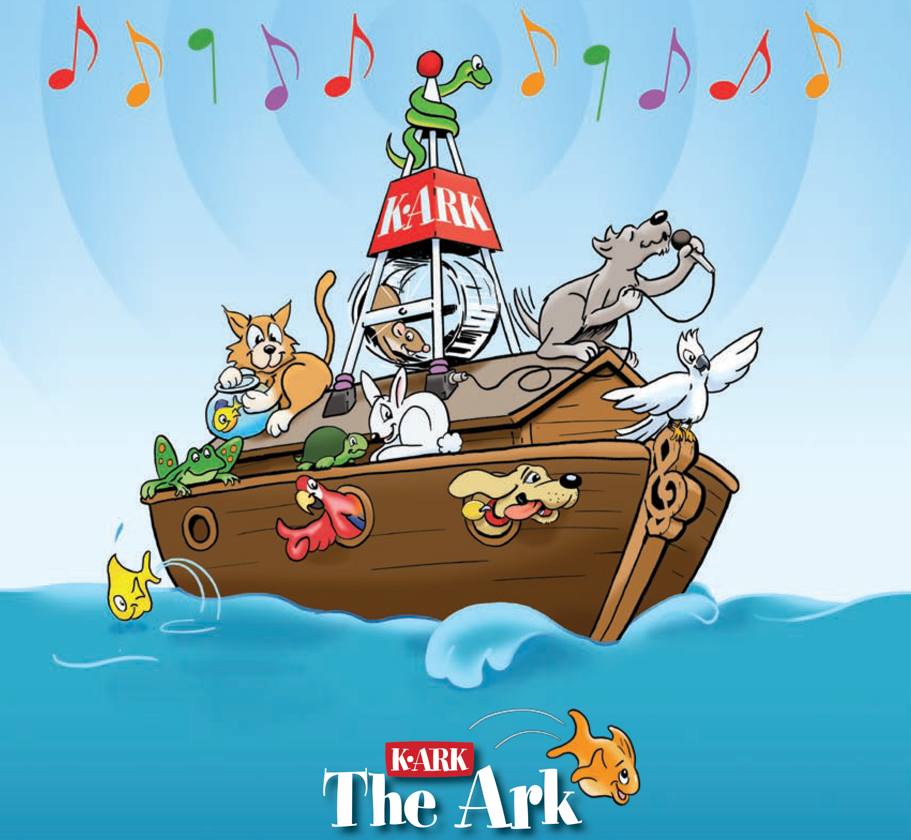

PetPower Radio offers a clear alternative to background music. Today members from coast to coast are enjoying the multiple features and benefits of our unique entertainment, communications and marketing medium.
Imagine your store’s own custom branded radio station playing today’s popular songs that feature positive, uplifting lyrics.
Imagine hearing announcements that brand the station with the name of your business. And instead of trite DJ chatter, professional announcers recognize your associates’ birthdays and special achievements. Blended neatly together with major market station jingles and customer friendly programming, it’s called;
"The Station the Animals... Love! PetPower Radio"
PetPower Radio is a real breakthrough in the field of audio entertainment and messaging for pet store environments! Rise Radio President and CEO Art Scott states, "The lessons we learned while building a custom, in-store radio network for Kroger Supermarkets laid the foundation for PetPower Radio. Kroger Store managers noticed that the music and messaging on Kroger Radio had a significant, positive impact on the morale and performance of their personnel. In addition, Kroger executives attributed the increased length of customer visits and greater impulse spending to their station's ability to entertain customers and pinpoint product advertising at the point of sale.”